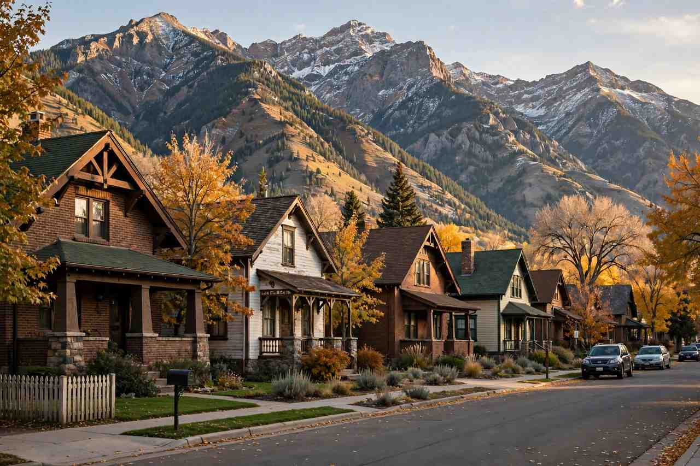

Rodent Control · West Haven, UT
Fast Rodent Control in West Haven, UT
Hearing scratching at night or finding droppings in West Haven? Murvo is a rodent-only specialist offering same-day service from local crews. We identify the species, remove the infestation, clean up the mess, and exclude rodents for good. Pricing is flat-rate and quoted in writing, the work is guaranteed in writing, and coverage extends across Weber County for homes and businesses alike. From Riverdale, Marriott-Slaterville, Ogden to every corner of Weber County, 2 ZIP codes are covered by local Murvo crews.
24/7Availability
2ZIP codes covered
Same-dayResponse
Licensed · Upfront options · Written guarantees · Fully insured
West Haven at a glance
Local Rodent Control for West Haven, UT.
Weber County
Countynorthern Utah
RegionOgden · 5 mi
Nearest metro32 miles north of Salt Lake City
From Salt Lake City2
ZIP codes covered Service by service in West Haven
Rodent Control Services Available in West Haven
Rodent-only specialists serving West Haven and Weber County. Every service below is explained in local terms - the species involved, the entry points that matter in suburban homes at the foothill interface, cabins and second homes, and older in-town homes with basements, and the seasonal timing that decides whether a fix lasts.
- 01Rodent Control↗
- 02Rodent Inspection↗
- 03Rodent Removal↗
- 04Rodent Exclusion↗
- 05Rodent Proofing↗
- 06Rat Control↗
- 07Mice Control↗
- 08Mouse Removal↗
- 09Rat Removal↗
- 10Rodent Trapping↗
- 11Rodent Baiting↗
- 12Rodenticide Application↗
- 13Attic Rodent Removal↗
- 14Crawl Space Rodent Removal↗
- 15Wall Rodent Removal↗
- 16Kitchen Rodent Control↗
- 17Garage Rodent Control↗
- 18Commercial Rodent Control↗
- 19Residential Rodent Control↗
- 20Emergency Rodent Removal↗
- 21Same-Day Rodent Control↗
- 22Rodent Damage Repair↗
- 23Rodent Waste Cleanup↗
- 24Rodent Disinfection↗
- 25Rodent Odor Removal↗
- 26Dead Rodent Removal↗
- 27Rodent Dropping Cleanup↗
- 28Rodent Exclusion for Roofs↗
- 29Rodent Exclusion for Vents↗
- 30Rodent Exclusion for Chimneys↗
Rodent Control in West Haven
Rodent Control in West Haven
What does a finished job actually look like? No new droppings, no nighttime movement, and no open route back inside. That is the standard Murvo works toward in West Haven, with background-checked technicians, a written workmanship guarantee, and follow-up checks that confirm the quiet is real rather than temporary luck.
In West Haven, rodent control is not a generic spray-and-go service. Rodents exploit garage door seals, foundation and sill gaps, roofline gaps at snow-loaded eaves, and vents on cabins and outbuildings in suburban homes at the foothill interface, cabins and second homes, and older in-town homes with basements, and a fix that ignores those routes does not last. Murvo's West Haven team inspects first, shows you the evidence - droppings, gnaw marks, entry gaps - and then lays out the work with a flat-rate written quote. We serve all of Weber County from West Haven, including Roy, Riverdale, and every job is covered by our written workmanship guarantee. Homes near Riverdale tend to show activity first in West Haven, which is why inspections start with garage door seals, foundation and sill gaps, roofline gaps at snow-loaded eaves, and vents on cabins and outbuildings.
We start by identifying whether House mouse (Mus musculus), Deer mouse (Peromyscus maniculatus), or both are active, because each species nests, feeds, and travels differently. Once numbers fall, exclusion sealing closes the route back in, droppings and nesting debris are removed hygienically, and follow-up monitoring checks the attic, crawl space, and kitchen until readings stay clear. Nothing is sealed while animals remain inside. Traps are placed on proven runways along walls, beams, and pipe runs, checked on schedule, and adjusted as catches change. That order protects your home.
After you book, we confirm a time window and your background-checked technician arrives in a marked vehicle with identification. You receive a flat-rate written quote before any work starts. Once approved, trapping and sealing begin, and follow-up visits are scheduled before we leave, with the guarantee in writing. They walk the property with you, inspect inside and out, and explain what they find with photos. No work begins without your approval.
Need help quickly in West Haven? Call any time — the emergency line is staffed 24/7, and same-day rodent control appointments are available in most areas. We inspect first, explain the plan in plain language, and put the flat rate in writing before work starts. Around West Haven, suburban homes at the foothill interface, cabins and second homes, and older in-town homes with basements give rodents the most cover, which is why entry points get checked before traps are set.
The honest answer is that it depends on species, activity level, and how much sealing your home needs, which is why Murvo inspects first and then gives you a flat-rate quote in writing. For national context only, Angi's 2026 data averages rat and mouse removal and control at $396, typically $189 to $655; that is not a Murvo price, and your written quote is the figure you pay.
Rodent Inspection in West Haven
Rodent Inspection in West Haven
You do not need to see a rodent to have a rodent problem in West Haven. Droppings in the attic, gnaw marks near garage door seals, foundation and sill gaps, roofline gaps at snow-loaded eaves, and vents on cabins and outbuildings, or noises after dark are enough reason to book a rodent inspection. Murvo technicians check the whole property, photograph what they find, and give you a prioritized plan plus a flat-rate written quote for any work recommended.
When you need rodent inspection in West Haven, the job starts with what is actually happening in your part of Weber County. Murvo crews work West Haven every week, so they know how House mouse (Mus musculus) and Deer mouse (Peromyscus maniculatus) behave around suburban homes at the foothill interface, cabins and second homes, and older in-town homes with basements here - and where they get in: garage door seals, foundation and sill gaps, roofline gaps at snow-loaded eaves, and vents on cabins and outbuildings. We arrive equipped for the full job, confirm the flat rate in writing before work begins, and cover the whole West Haven area, including Roy, Riverdale. No call-center runaround and no open-ended hourly billing - just a local crew, a clear plan, and a written quote you approve first. Coverage for rodent inspection spans 2 ZIP codes in Weber County, including 84402, 84401.
We listen first: when you hear noises, and where, often points straight to the most active nesting areas. Technicians then trace active runways, identify whether droppings belong to House mouse (Mus musculus) or Deer mouse (Peromyscus maniculatus), and check insulation and wiring for damage. The visit ends with a written report covering species, entry points, contamination, and the removal and exclusion steps we recommend, each with a flat-rate price. That detail stops you paying for treatment aimed at the wrong species or the wrong part of the building.
After booking, we confirm your time window by text or call. On arrival, your background-checked technician checks in, protects floors and access points, and works through a set inspection checklist inside and out. Before leaving, they review photos and priorities with you, leave the written findings, and schedule any follow-up work you approve. The inspection itself is backed by licensed, insured service and our written workmanship guarantee on quoted work.
You do not have to wait days for answers in West Haven. Same-day rodent inspection appointments are available in most areas, urgent calls are taken 24/7, and most home inspections take under an hour. You finish the visit with photos, written findings, and flat-rate pricing for anything we recommend. Around West Haven, suburban homes at the foothill interface, cabins and second homes, and older in-town homes with basements give rodents the most cover, which is why entry points get checked before traps are set.
Your exact rodent inspection price is confirmed before we visit, and any follow-up work is quoted as a flat rate in writing after the inspection — no hourly billing. For context, Angi's 2026 data puts a professional rodent inspection nationally at $100 to $200, often credited toward the job if you proceed.
Rodent Removal in West Haven
Rodent Removal in West Haven
How quickly should you act once droppings appear in living areas? Promptly, because contamination builds daily and young rodents mature fast. Murvo responds with licensed, insured, background-checked technicians who remove animals hygienically, explain when each room is safe again, and back the completed removal with a written workmanship guarantee.
When you need rodent removal in West Haven, the job starts with what is actually happening in your part of Weber County. Murvo crews work West Haven every week, so they know how House mouse (Mus musculus) and Deer mouse (Peromyscus maniculatus) behave around suburban homes at the foothill interface, cabins and second homes, and older in-town homes with basements here - and where they get in: garage door seals, foundation and sill gaps, roofline gaps at snow-loaded eaves, and vents on cabins and outbuildings. We arrive equipped for the full job, confirm the flat rate in writing before work begins, and cover the whole West Haven area, including Roy, Riverdale. No call-center runaround and no open-ended hourly billing - just a local crew, a clear plan, and a written quote you approve first. Seasonal timing matters for rodent removal in West Haven: rodents surge in West Haven from October through April.
Removal starts with an assessment of species, numbers, and access routes across attics, wall voids, garages, and kitchens. Removal is followed immediately by entry-point exclusion, because new rodents will replace removed ones through any gap left open, and disinfection is arranged after heavy activity. Once you approve the written quote, technicians set traps along proven runways, check them on schedule, and remove animals promptly and hygienically. Catch records show progress clearly instead of relying on guesswork. Photos document each stage for you.
Once removal is underway, expect short, predictable visits. Your technician checks each mapped trap, removes catches hygienically, resets what is still needed, and updates the record with you. When catches reach zero, monitoring confirms it, sealing is discussed, and the job closes with a walkthrough and your guarantee paperwork in hand before we leave. At close, prevention advice is tailored to what actually attracted rodents to your property, not copied from a generic checklist.
When rodents are active indoors in West Haven, waiting rarely helps. Rodent removal can usually start the same day you call, our line answers 24/7 for a rodent loose in a living area, and the first visit sets traps straight away. Scheduled returns then clear and reset them until monitoring shows the home is clear. Murvo's West Haven crews explain the finding either way, and the flat-rate quote leaves the decision with you.
How many animals are active, which species they are, and how much sealing follows removal all shape the price, so we assess first and then quote one flat rate in writing. Angi's 2026 national context — an average of $396 and a typical $189 to $655 range for rat and mouse removal — is provided for comparison only; your written quote is the exact Murvo figure.
Rodent Exclusion in West Haven
Rodent Exclusion in West Haven
Exclusion is also the safest long-term strategy for West Haven homes, because a sealed house needs far less bait and fewer repeat treatments. Murvo's licensed, insured crews finish roof, vent, and chimney work to weatherproof standards, walk every sealed opening with you afterwards, and back the result with a written workmanship guarantee you can hold us to.
Homeowners in West Haven call Murvo for rodent exclusion because the problem here is specific: House mouse (Mus musculus) pressure around suburban homes at the foothill interface, cabins and second homes, and older in-town homes with basements, tight access at garage door seals, foundation and sill gaps, roofline gaps at snow-loaded eaves, and vents on cabins and outbuildings, and activity that follows the local season. Our Weber County crews diagnose the real source before recommending work, explain the options in plain language, and quote one flat rate in writing. Across West Haven - including Roy, Riverdale - every visit is backed by licensed, insured technicians and our written workmanship guarantee. Coverage for rodent exclusion spans 2 ZIP codes in Weber County, including 84402, 84401.
Before any sealing, active rodents are cleared with trapping so nothing is trapped inside the structure. Because exclusion removes the route in rather than relying on chemicals, it reduces the need for rodenticides and supports pet-safe, no-poison control. A final walkthrough shows you every protected opening, and monitoring checks confirm no new activity appears at sealed points. We then work opening by opening around garage door seals, foundation and sill gaps, roofline gaps at snow-loaded eaves, and vents on cabins and outbuildings, rooflines, and utility penetrations, photographing each finished seal. Every seal is listed on your written guarantee.
After booking rodent exclusion in West Haven, your technician first surveys the whole exterior and confirms which openings are active. You receive a flat-rate written quote listing each seal before work starts. Sealing is then completed opening by opening, photographed as we go, and finished with a walkthrough together. Follow-up monitoring is arranged, and every seal is covered by the written workmanship guarantee. No opening is sealed without being shown to you first.
Rodent exclusion in West Haven usually starts with a survey visit we can often schedule the same day you call. Sealing itself is booked as soon as any active animals are cleared, because nothing is sealed inside. Most homes are fully sealed within days, not weeks, and urgent entry points near wiring or food areas are prioritized first. If you are seeing signs now, an inspection this week is the fastest way to know which situation you are in.
For national context, Angi's 2026 data puts basic exclusion at $200 to $600, depending on access and the number of openings. That is a benchmark, not a Murvo price. After surveying your West Haven home, we list every opening that needs sealing and quote one flat rate in writing, so you pay for the work your property actually needs and nothing more.
Rodent Proofing in West Haven
Rodent Proofing in West Haven
The best rodent problem is the one that never starts. Rodent proofing in West Haven hardens your home before House mouse (Mus musculus) and Deer mouse (Peromyscus maniculatus) move in: sealing gaps, screening vents, fitting door sweeps, and removing the food and shelter that attract them. Murvo surveys the whole property, prioritizes the work, and gives one flat-rate written quote for the work.
In West Haven, rodent proofing is not a generic spray-and-go service. Rodents exploit garage door seals, foundation and sill gaps, roofline gaps at snow-loaded eaves, and vents on cabins and outbuildings in suburban homes at the foothill interface, cabins and second homes, and older in-town homes with basements, and a fix that ignores those routes does not last. Murvo's West Haven team inspects first, shows you the evidence - droppings, gnaw marks, entry gaps - and then lays out the work with a flat-rate written quote. We serve all of Weber County from West Haven, including Roy, Riverdale, and every job is covered by our written workmanship guarantee. Homes near Riverdale tend to show activity first in West Haven, which is why inspections start with garage door seals, foundation and sill gaps, roofline gaps at snow-loaded eaves, and vents on cabins and outbuildings.
Materials follow the same standard as full exclusion work: copper mesh packed into irregular gaps, hardware cloth over openings that need airflow, flashing at vulnerable junctions, and sealants matched to smaller cracks. The written plan photographs each weakness, states who handles it, and schedules a seasonal re-check, since new gaps appear as a building ages and proofing works best as maintenance. Around kitchens, pipe runs and the voids behind units receive particular attention, because warmth and food meet there. Seasonal timing is noted in the plan as well.
Arrange a survey at a time that suits you; there is no emergency, so scheduling stays relaxed. Your technician walks every side of the property with you, photographs weak points, and talks through the plan in plain language. You then receive a written quote separating essential work from optional improvements, and nothing proceeds without your say-so. Staging the work is fine; essential sealing can proceed first while optional improvements wait until a season or budget that suits you better.
Rodent proofing is preventive, so there is rarely a rush, but surveys in West Haven can often be arranged the same day you call, and always within a few days. Most proofing work is completed in a single visit once you approve the plan, and booking before colder weather gives your home protection ahead of the seasonal rush indoors. That is also why Murvo pairs removal with exclusion in West Haven - treating the animal without closing garage door seals, foundation and sill gaps, roofline gaps at snow-loaded eaves, and vents on cabins and outbuildings rarely lasts.
For national context, Angi's 2026 data puts exclusion, the core of proofing, at $200 to $600 for basic work. That figure is a benchmark, not a Murvo price. After surveying your West Haven property, we separate quick homeowner wins from specialist sealing and quote the professional work as one flat rate in writing, so you can stage spending sensibly.
Rat Control in West Haven
Rat Control in West Haven
Rats are cautious, strong, and destructive, and a West Haven sighting usually means a settled group is already traveling your fences, pipes, and rooflines nightly. Murvo's rat control identifies the species, maps those routes, and combines pre-baited trapping with removal and exclusion. You approve one flat-rate written quote before work starts, and monitoring continues until activity fully stops.
When you need rat control in West Haven, the job starts with what is actually happening in your part of Weber County. Murvo crews work West Haven every week, so they know how House mouse (Mus musculus) and Deer mouse (Peromyscus maniculatus) behave around suburban homes at the foothill interface, cabins and second homes, and older in-town homes with basements here - and where they get in: garage door seals, foundation and sill gaps, roofline gaps at snow-loaded eaves, and vents on cabins and outbuildings. We arrive equipped for the full job, confirm the flat rate in writing before work begins, and cover the whole West Haven area, including Roy, Riverdale. No call-center runaround and no open-ended hourly billing - just a local crew, a clear plan, and a written quote you approve first. Coverage for rat control spans 2 ZIP codes in Weber County, including 84402, 84401.
We prioritize trapping and exclusion within an integrated program and offer no-poison options where suitable. Monitoring devices then confirm the routes have gone quiet before we close the program. Where a site genuinely needs bait, it is placed only in tamper-resistant, locked stations positioned away from pets and food areas, and monitored on schedule. Droppings areas are cleaned safely, never dry-swept, because disturbing dry droppings can spread contamination; surfaces are disinfected first, following CDC guidance. Every station is labeled, mapped, and recorded.
Call for rat control in West Haven and we will book an inspection, often the same day for active problems. Trapping visits then run on a set schedule, with placements adjusted as activity shifts. The job closes only when monitoring confirms rats are gone and exclusion is complete. Your technician maps routes and harborage, explains the trapping plan, and gives you a flat-rate written quote before any work begins. Your guarantee is confirmed in writing.
Call day or night — urgent rat control calls in West Haven are answered 24/7, and a same-day inspection can usually start the program. Pre-baiting begins on that first visit once you approve the written quote, traps are set when rats are feeding confidently, and scheduled checks continue until activity stops. The written quote for your West Haven property will spell out exactly which of these applies before any work starts.
Species, colony size, and the number of entry points to seal all affect rat work, which is why Murvo inspects first and quotes one flat rate in writing. Angi's 2026 figures, given for national context only, average rat control and removal at $396 and typically run $189 to $655; the written quote for your West Haven home is the exact price.
Mice Control in West Haven
Mice Control in West Haven
Most West Haven mouse problems announce themselves in the kitchen first: droppings in a drawer, a chewed corner on stored food, movement behind the kickboard. Murvo surveys those hotspots, clusters traps where mice actually travel, seals gaps, and covers the program with one flat-rate written quote approved in advance.
When you need mice control in West Haven, the job starts with what is actually happening in your part of Weber County. Murvo crews work West Haven every week, so they know how House mouse (Mus musculus) and Deer mouse (Peromyscus maniculatus) behave around suburban homes at the foothill interface, cabins and second homes, and older in-town homes with basements here - and where they get in: garage door seals, foundation and sill gaps, roofline gaps at snow-loaded eaves, and vents on cabins and outbuildings. We arrive equipped for the full job, confirm the flat rate in writing before work begins, and cover the whole West Haven area, including Roy, Riverdale. No call-center runaround and no open-ended hourly billing - just a local crew, a clear plan, and a written quote you approve first. In West Haven, mice control calls most often involve suburban homes at the foothill interface, cabins and second homes, and older in-town homes with basements, where garage door seals, foundation and sill gaps, roofline gaps at snow-loaded eaves, and vents on cabins and outbuildings decide whether the fix holds.
The program starts with an activity and entry-point survey covering kitchens, attics, wall voids, and under-floor spaces. Technicians return to clear and reset traps and track numbers until they reach zero. We then seal pencil-width gaps, including the overlooked routes behind baseboards and where pipes and wires pass through floors, and advise on cleaning scent-marked surfaces. Traps are placed in clusters along baseboards, behind appliances, and in attic voids, because mice travel the same short routes nightly. Follow-up monitoring confirms the result before sign-off.
Book with one call and tell us which rooms show signs; same-day surveys are often possible. Check visits are scheduled immediately, and each one reports catches plainly until the final confirmation visit shows activity has stopped. Your technician inspects kitchen, attic, and voids, explains the route map, and quotes in writing before traps are set. The final confirmation matters, because mice can go quiet briefly while a nest remains, and monitoring distinguishes quiet from genuinely finished.
Mice multiply fast, so mice control in West Haven is built to start fast too: a survey can often be arranged the same day you call, with traps set on that first visit once the quote is approved. Because mice investigate new objects quickly, catches usually begin soon after, and check visits follow until a final confirmation shows activity has stopped. If you are seeing signs now, an inspection this week is the fastest way to know which situation you are in.
Mouse work is priced by the number of rooms affected and the amount of sealing involved, so Murvo surveys first and quotes one flat rate in writing. For national context only, Angi's 2026 data averages rat and mouse control and removal at $396, typically $189 to $655. That is not a Murvo price; your written quote is exact.
Mouse Removal in West Haven
Mouse Removal in West Haven
Mice nest where it is warm and undisturbed: attics, wall voids, crawl spaces, and behind kitchen cabinets in suburban homes at the foothill interface, cabins and second homes, and older in-town homes with basements across West Haven. They feed close to those nests, following garage door seals, foundation and sill gaps, roofline gaps at snow-loaded eaves, and vents on cabins and outbuildings and pipe runs between rooms. Our technicians check warm spots near water heaters and appliances where mice raise young, so no nesting site is missed during removal.
In West Haven, mouse removal is not a generic spray-and-go service. Rodents exploit garage door seals, foundation and sill gaps, roofline gaps at snow-loaded eaves, and vents on cabins and outbuildings in suburban homes at the foothill interface, cabins and second homes, and older in-town homes with basements, and a fix that ignores those routes does not last. Murvo's West Haven team inspects first, shows you the evidence - droppings, gnaw marks, entry gaps - and then lays out the work with a flat-rate written quote. We serve all of Weber County from West Haven, including Roy, Riverdale, and every job is covered by our written workmanship guarantee. The West Haven crews who handle mouse removal also handle the follow-through - proofing, cleanup, and monitoring - so one visit can close the whole problem.
The survey comes first, and it is deliberately thorough. Traps are then set in multiples at proven points, because a single trap rarely reflects colony size. Returns are scheduled tightly: catches are cleared, traps reset, and numbers tracked until they fall to zero and stay there across a confirming check before sealing begins. Lofts, under-floor voids, cabinets, and the spaces behind kitchen units are checked for nests, droppings, and stored food caches. Photographs of nesting sites help here, because they reveal how far activity had spread before trapping began.
For urgent mouse problems in West Haven, contact Murvo for a same-day response where available. Return visits are scheduled to clear and reset traps, and cleanup and sealing follow once catches reach zero. The final visit confirms the result and your written workmanship guarantee. Your technician surveys the home, explains the multi-trap plan, and confirms a flat-rate written quote before starting. You are updated after every visit, without ever chasing us.
In West Haven, mouse removal can often begin the same day you call, especially where mice are active in kitchens or living areas. The first visit surveys nesting sites and sets traps immediately after you approve the quote; because mice investigate traps quickly, catches usually start fast, and return visits continue until numbers reach zero. That is also why Murvo pairs removal with exclusion in West Haven - treating the animal without closing garage door seals, foundation and sill gaps, roofline gaps at snow-loaded eaves, and vents on cabins and outbuildings rarely lasts.
Rooms involved and sealing needed determine the cost of removal, so we survey first and agree a flat rate in writing before work begins. As national context only, Angi's 2026 data averages rat and mouse removal at $396, with a typical range of $189 to $655; that benchmark is not a Murvo price, and your written quote covers your exact program.
Rat Removal in West Haven
Rat Removal in West Haven
A hurried rat removal that misses breeding females or a hidden nest simply restarts the cycle. Murvo's rat removal in West Haven starts with a species and colony-size assessment, uses pre-baited traps on confirmed runways, and removes animals hygienically across repeat visits. A flat-rate written quote is agreed before trapping starts.
In West Haven, rat removal is not a generic spray-and-go service. Rodents exploit garage door seals, foundation and sill gaps, roofline gaps at snow-loaded eaves, and vents on cabins and outbuildings in suburban homes at the foothill interface, cabins and second homes, and older in-town homes with basements, and a fix that ignores those routes does not last. Murvo's West Haven team inspects first, shows you the evidence - droppings, gnaw marks, entry gaps - and then lays out the work with a flat-rate written quote. We serve all of Weber County from West Haven, including Roy, Riverdale, and every job is covered by our written workmanship guarantee. In West Haven, rat removal calls most often involve suburban homes at the foothill interface, cabins and second homes, and older in-town homes with basements, where garage door seals, foundation and sill gaps, roofline gaps at snow-loaded eaves, and vents on cabins and outbuildings decide whether the fix holds.
We lead with trapping and exclusion in an integrated, pet-conscious approach, using locked bait stations only where genuinely justified and monitored on schedule. Monitoring devices and a final walkthrough then provide documented evidence that activity has ended, and ongoing proofing keeps drains, vents, and rooflines checked afterwards. After clearance, contaminated insulation areas can be sanitized, and droppings are never dry-swept: following CDC guidance, surfaces are disinfected first before waste is removed. That evidence is always shared with you in writing.
After booking, we confirm access needs for the attic, basement, or outbuildings so no time is wasted. A final monitoring period confirms the home is clear before sign-off. On the first visit, your background-checked technician sets out the plan and begins pre-baiting once you approve the written quote. Follow-up visits run on schedule until catches stop, then sealing and sanitation are completed. Progress is reported to you after every single visit.
In West Haven, rat removal can usually start the same day you call, with 24/7 answering for rats active in living areas. Pre-baiting begins on the first visit after you approve the written quote, and traps are set once rats feed confidently, typically within days. Repeat visits then run frequently until monitoring confirms the colony is gone. In Weber County, activity follows the local season, so timing the work matters as much as the method.
Rat removal pricing depends on colony size, access, and the sealing needed afterwards, so Murvo assesses your property first and quotes a flat rate in writing. For national context only, Angi's 2026 data averages rat removal at $396, typically $189 to $655. That is a benchmark, not a Murvo price, and your written quote covers the full program described.
Rodent Trapping in West Haven
Rodent Trapping in West Haven
Why choose trapping over poison in a family home? Every result is visible, countable, and removable, with no chemicals loose indoors and no animals dying in hidden voids. Murvo offers snap, multi-catch, and live-capture options, explains each placement for pet and child safety, and guarantees the finished program in writing.
Homeowners in West Haven call Murvo for rodent trapping because the problem here is specific: House mouse (Mus musculus) pressure around suburban homes at the foothill interface, cabins and second homes, and older in-town homes with basements, tight access at garage door seals, foundation and sill gaps, roofline gaps at snow-loaded eaves, and vents on cabins and outbuildings, and activity that follows the local season. Our Weber County crews diagnose the real source before recommending work, explain the options in plain language, and quote one flat rate in writing. Across West Haven - including Roy, Riverdale - every visit is backed by licensed, insured technicians and our written workmanship guarantee. In West Haven, rodent trapping calls most often involve suburban homes at the foothill interface, cabins and second homes, and older in-town homes with basements, where garage door seals, foundation and sill gaps, roofline gaps at snow-loaded eaves, and vents on cabins and outbuildings decide whether the fix holds.
A trapping program starts with inspection: identifying the species, mapping runways, and finding where droppings and rub marks show real travel. Traps are set perpendicular to walls and along beams, pipes, and fence lines, matched to the setting. For rats, we pre-bait unset traps for several days, a step most DIY attempts skip, then set them for maximum effect. Mice receive clustered traps at hotspots. Technicians return on schedule to clear, reset, and record every catch. Placements shift as activity patterns change.
Book rodent trapping in West Haven and a technician can often start the same day. Scheduled returns clear and reset traps and share catch records with you. When numbers reach zero, we confirm monitoring is clear and discuss sealing. The first visit inspects, maps activity, and places or pre-baits traps; you approve a flat-rate written quote covering the program including check visits before we proceed. The finished program is guaranteed in writing.
In West Haven, a rodent trapping program can usually start the same day you call, with traps placed or pre-baiting begun on the first visit after you approve the quote. Mice often investigate within the first night, while wary rats need a few days of pre-baiting before traps are set. Scheduled checks then keep the program moving until numbers reach zero. In Weber County, activity follows the local season, so timing the work matters as much as the method.
Trapping is usually quoted as part of a complete removal program rather than by the trap, and the price depends on species, activity level, and how many check visits are needed. Murvo inspects first and quotes one flat rate in writing covering the program and its check visits, so there are no per-visit surprises and no hourly billing at any stage.
Rodent Baiting in West Haven
Rodent Baiting in West Haven
State rules shape how baiting works in Utah: some states restrict anticoagulant rodenticides, and Murvo follows the strictest applicable limits on every job. Before any station is placed at your West Haven property, a technician maps activity, reviews pet and child concerns with you, and explains exactly what to watch for between monitoring visits. Nothing is placed without that conversation.
Homeowners in West Haven call Murvo for rodent baiting because the problem here is specific: House mouse (Mus musculus) pressure around suburban homes at the foothill interface, cabins and second homes, and older in-town homes with basements, tight access at garage door seals, foundation and sill gaps, roofline gaps at snow-loaded eaves, and vents on cabins and outbuildings, and activity that follows the local season. Our Weber County crews diagnose the real source before recommending work, explain the options in plain language, and quote one flat rate in writing. Across West Haven - including Roy, Riverdale - every visit is backed by licensed, insured technicians and our written workmanship guarantee. In West Haven, rodent baiting calls most often involve suburban homes at the foothill interface, cabins and second homes, and older in-town homes with basements, where garage door seals, foundation and sill gaps, roofline gaps at snow-loaded eaves, and vents on cabins and outbuildings decide whether the fix holds.
Where baiting is not appropriate indoors, we say so, and recommend trapping first followed by proofing of gaps around pipes, vents, and doors. Consumption records from each visit show whether activity is falling, holding, or moving, guiding whether stations stay, move, or come out entirely in favor of sealing and trapping alone. That exclusion-first approach reduces reliance on bait over time, which matters for households with children, pets, or visiting wildlife in West Haven. You receive those records after every monitoring visit.
Booking starts with a conversation about pets, children, and wildlife on your property, because that shapes placement before we arrive. Approved stations are installed locked and labeled that visit, with monitoring dates booked before we leave. The inspection visit maps activity, agrees each proposed station location with you, and confirms the written quote. Nothing about placement, product type, or monitoring frequency is left vague, and you can ask for the record at any point.
In West Haven, rodent baiting starts with an inspection visit we can often arrange the same day you call. Stations are only placed after activity is mapped and you approve the written quote and each location, so setup is deliberate rather than rushed. Monitoring visits then run on a fixed schedule until consumption stops and activity is confirmed clear. In Weber County, most cases involve the House mouse (Mus musculus) and the Deer mouse (Peromyscus maniculatus), so the inspection focuses on their routes first.
How many locked stations your property needs and how long monitoring runs determine the cost, so Murvo inspects and maps activity first, then quotes one flat rate in writing covering placement and scheduled checks. There are no per-visit surprises, and because the approach is exclusion-first, the aim is to reduce and eventually remove stations rather than maintain them forever.
Rodenticide Application in West Haven
Rodenticide Application in West Haven
Our approach in West Haven is exclusion-first: seal entry points, trap active animals, and shrink the need for chemical control quickly. Where rodenticide application is genuinely justified for House mouse (Mus musculus) or Deer mouse (Peromyscus maniculatus), a licensed technician maps, labels, and anchors every station, records amounts at each visit, and retrieves dead rodents promptly where accessible to reduce odor and secondary risks.
When you need rodenticide application in West Haven, the job starts with what is actually happening in your part of Weber County. Murvo crews work West Haven every week, so they know how House mouse (Mus musculus) and Deer mouse (Peromyscus maniculatus) behave around suburban homes at the foothill interface, cabins and second homes, and older in-town homes with basements here - and where they get in: garage door seals, foundation and sill gaps, roofline gaps at snow-loaded eaves, and vents on cabins and outbuildings. We arrive equipped for the full job, confirm the flat rate in writing before work begins, and cover the whole West Haven area, including Roy, Riverdale. No call-center runaround and no open-ended hourly billing - just a local crew, a clear plan, and a written quote you approve first. Seasonal timing matters for rodenticide application in West Haven: rodents surge in West Haven from October through April.
Documentation runs through the whole program. Every product is recorded with its label and safety information, which stays with you. Stations are positioned away from areas children and pets use, checked against Utah restrictions before selection, and removed once monitoring confirms activity has ended. Dead rodents are retrieved promptly where accessible. Meanwhile exclusion work proceeds in parallel, sealing entry points so dependence on chemical control shrinks with each visit rather than becoming permanent. State rules are rechecked whenever a product changes, since permitted options can differ between jurisdictions and seasons.
Before the visit, tell us about children, pets, livestock, and wildlife using the property; that information shapes product and placement decisions. On the day, your background-checked technician installs any approved stations locked and labeled, records the details, and explains what to watch for. Scheduled checks follow until activity ends and stations are removed. Label information, amounts, and visit dates stay in your records throughout, so the treatment history is complete and available whenever needed.
No responsible rodenticide application starts without an inspection, and in West Haven that inspection can often be scheduled the same day you call. If treatment is justified and you approve the written quote, locked stations are installed on that visit. Monitoring then runs on schedule, and treatment stops as soon as the data shows activity has ended. That is also why Murvo pairs removal with exclusion in West Haven - treating the animal without closing garage door seals, foundation and sill gaps, roofline gaps at snow-loaded eaves, and vents on cabins and outbuildings rarely lasts.
Station numbers, the product permitted under Utah rules, and the length of monitoring all shape the price. Murvo inspects first, explains whether trapping or exclusion could avoid chemical control entirely, and then quotes one flat rate in writing before work begins. That quote covers scheduled monitoring visits, so there are no per-visit surprises later.
Attic Rodent Removal in West Haven
Attic Rodent Removal in West Haven
When chewed wiring appears overhead, treat it as urgent; damaged cables are a real fire risk. Murvo prioritizes those West Haven attics, clears animals with targeted trapping rather than poison, leaves monitoring briefly after sealing to confirm nothing remains inside, and backs the finished work with a written workmanship guarantee.
In West Haven, attic rodent removal is not a generic spray-and-go service. Rodents exploit garage door seals, foundation and sill gaps, roofline gaps at snow-loaded eaves, and vents on cabins and outbuildings in suburban homes at the foothill interface, cabins and second homes, and older in-town homes with basements, and a fix that ignores those routes does not last. Murvo's West Haven team inspects first, shows you the evidence - droppings, gnaw marks, entry gaps - and then lays out the work with a flat-rate written quote. We serve all of Weber County from West Haven, including Roy, Riverdale, and every job is covered by our written workmanship guarantee. Homes near Riverdale tend to show activity first in West Haven, which is why inspections start with garage door seals, foundation and sill gaps, roofline gaps at snow-loaded eaves, and vents on cabins and outbuildings.
Cleanup in a contaminated attic follows CDC guidance: droppings and nesting material are never dry-swept, because that can spread contamination into the air; surfaces are disinfected first, then waste is removed hygienically by technicians in protective equipment. Our IPM approach favors trapping and exclusion over poison in attics, preventing animals dying in inaccessible voids. We also assess insulation damage and can refer repairs, check adjoining crawl spaces for connected activity, and advise on clearing roof debris. Photographs document conditions before and after work.
Book an attic visit, same-day where wiring damage or heavy activity makes it urgent. Your technician inspects overhead and along the roofline, shows you photographs of the evidence, and confirms the written quote. Trapping starts after approval, follow-up checks are booked ahead, and sealing plus cleanup complete the sequence before monitoring confirms the result. Wiring or insulation concerns are flagged separately in writing, so you can arrange any specialist repairs with clear information in hand.
Overhead scratching in West Haven often gets a same-day attic rodent removal visit, and attics with chewed wiring are prioritized because of the fire risk. Trapping starts on the first visit once you approve the written quote, checks run on schedule, and most attics are cleared and sealed within days. Monitoring stays in place briefly afterwards to confirm nothing remains inside. In Weber County, most cases involve the House mouse (Mus musculus) and the Deer mouse (Peromyscus maniculatus), so the inspection focuses on their routes first.
Attic costs depend on how many animals are active, how much sealing the roofline needs, and whether contaminated insulation requires cleanup, so Murvo inspects first and quotes one flat rate in writing. That quote covers the removal program described, with cleanup options priced separately in writing before you decide, so there are no surprises once work is underway.
Crawl Space Rodent Removal in West Haven
Crawl Space Rodent Removal in West Haven
In suburban homes at the foothill interface, cabins and second homes, and older in-town homes with basements, the space underneath offers rodents shelter, burrowing ground at vents, and pipe runs reached through garage door seals, foundation and sill gaps, roofline gaps at snow-loaded eaves, and vents on cabins and outbuildings across Weber County. Standing water and leaking pipes raise pressure further, so technicians flag moisture problems during inspection too. Removal also traces wall-void routes upward, because below-house activity often connects to the attic.
Homeowners in West Haven call Murvo for crawl space rodent removal because the problem here is specific: House mouse (Mus musculus) pressure around suburban homes at the foothill interface, cabins and second homes, and older in-town homes with basements, tight access at garage door seals, foundation and sill gaps, roofline gaps at snow-loaded eaves, and vents on cabins and outbuildings, and activity that follows the local season. Our Weber County crews diagnose the real source before recommending work, explain the options in plain language, and quote one flat rate in writing. Across West Haven - including Roy, Riverdale - every visit is backed by licensed, insured technicians and our written workmanship guarantee. Around Riverdale, Marriott-Slaterville, Ogden, the pattern is similar: Deer mouse (Peromyscus maniculatus) finds garage door seals, foundation and sill gaps, roofline gaps at snow-loaded eaves, and vents on cabins and outbuildings first, and lasting crawl space rodent removal has to close those routes.
The sequence is Inspect, Remove, Exclude, Clean, and Monitor. Targeted trapping then removes active rats and mice below the house, with checks on schedule. After clearance, vent exclusion with sturdy mesh and sealing of pier and plumbing gaps close the space, and waste cleanup removes droppings and nesting material. A full under-home inspection with photo documentation establishes species, nesting areas, and damage to vapor barrier and pipe insulation. Monitoring checks confirm activity has ended before we close the job properly.
Schedule an under-home inspection, usually within days and sooner when odors reach living areas. Your technician photographs conditions below, explains findings in plain language, and confirms the written quote before any trapping. Clearance, vent screening, and cleanup then follow in sequence, with monitoring left in place until the space below is confirmed quiet. Photographs from below the home accompany the final paperwork, which is especially useful because few homeowners ever see that space themselves.
For crawl space rodent removal in West Haven, inspections are usually arranged within a few days — and sooner when odors are drifting into living areas or activity sounds heavy. Trapping begins on the first visit after you approve the written quote, clearance and sealing follow in sequence, and monitoring stays in place until the space below is confirmed quiet. In Weber County, activity follows the local season, so timing the work matters as much as the method.
Crawl-space costs depend on access, how many vents and gaps need sealing, and whether waste cleanup is required, so Murvo inspects first and quotes one flat rate in writing. If extra vents need sealing within the agreed scope, there are no surprises, and cleanup options are priced in writing before you decide whether to include them.
Wall Rodent Removal in West Haven
Wall Rodent Removal in West Haven
Most West Haven wall calls start at night, when scratching behind the drywall makes sleep impossible. Murvo locates the activity by listening, tracing entry routes, and using inspection cameras where access allows, then traps at void access points. A flat-rate written quote comes before any access work is considered.
When you need wall rodent removal in West Haven, the job starts with what is actually happening in your part of Weber County. Murvo crews work West Haven every week, so they know how House mouse (Mus musculus) and Deer mouse (Peromyscus maniculatus) behave around suburban homes at the foothill interface, cabins and second homes, and older in-town homes with basements here - and where they get in: garage door seals, foundation and sill gaps, roofline gaps at snow-loaded eaves, and vents on cabins and outbuildings. We arrive equipped for the full job, confirm the flat rate in writing before work begins, and cover the whole West Haven area, including Roy, Riverdale. No call-center runaround and no open-ended hourly billing - just a local crew, a clear plan, and a written quote you approve first. Around Riverdale, Marriott-Slaterville, Ogden, the pattern is similar: Deer mouse (Peromyscus maniculatus) finds garage door seals, foundation and sill gaps, roofline gaps at snow-loaded eaves, and vents on cabins and outbuildings first, and lasting wall rodent removal has to close those routes.
Locating comes before everything else in wall work. Checks follow on schedule, and placements shift if monitoring shows activity has moved into a connected void instead. Technicians listen at different points, note when noises occur, trace likely entry routes from roofline, baseboards, and pipe runs, and use cameras in accessible voids to confirm where animals travel and nest. Trapping is then placed at those access points to draw rodents out of the void. Notes from each listening check are compared over time, turning faint, inconsistent sounds into a reliable activity pattern.
Between visits, note the times and rooms where sounds continue, since that pattern guides adjustments. Your background-checked technician clears traps, checks connected voids, and runs quiet checks at varied times of day. Sign-off happens only when monitoring confirms silence, sealing and sanitation are complete, and your guarantee paperwork is confirmed in writing. Silence is checked more than once before sign-off, because a single quiet evening can mislead when an animal simply moves elsewhere.
In West Haven, wall rodent removal locating visits are often available the same day you call, especially for persistent scratching keeping you awake. Trapping is set at access points on that first visit once you approve the written quote, and because rodents travel the void nightly, results usually follow within days, confirmed by quiet-wall checks before we sign off. Murvo's West Haven crews explain the finding either way, and the flat-rate quote leaves the decision with you.
Wall work pricing depends on how precisely activity can be located and whether a minimal access cut is needed, which is why Murvo locates the activity first and quotes a flat rate in writing. That way wall access work never becomes an open-ended bill, and the quote covers the trapping, sealing, and monitoring described in your plan.
Kitchen Rodent Control in West Haven
Kitchen Rodent Control in West Haven
Droppings in cabinets, gnawed packaging or grease marks along the kickboards mean House mouse (Mus musculus) or Deer mouse (Peromyscus maniculatus) are feeding where your family eats. Our kitchen rodent control in West Haven removes rodents safely, seals gaps behind appliances and pipes, and helps keep food preparation areas clean, hygienic and properly protected.
In West Haven, kitchen rodent control is not a generic spray-and-go service. Rodents exploit garage door seals, foundation and sill gaps, roofline gaps at snow-loaded eaves, and vents on cabins and outbuildings in suburban homes at the foothill interface, cabins and second homes, and older in-town homes with basements, and a fix that ignores those routes does not last. Murvo's West Haven team inspects first, shows you the evidence - droppings, gnaw marks, entry gaps - and then lays out the work with a flat-rate written quote. We serve all of Weber County from West Haven, including Roy, Riverdale, and every job is covered by our written workmanship guarantee. Homes near Riverdale tend to show activity first in West Haven, which is why inspections start with garage door seals, foundation and sill gaps, roofline gaps at snow-loaded eaves, and vents on cabins and outbuildings.
Work begins with a kitchen-focused inspection behind fridges, ovens and sinks, inside cabinets and along kickboards, reading droppings and grease marks to identify the species and its routes. Discreet traps are placed away from food preparation surfaces, never loose poison where children, pets or food could reach it. We then trace activity into wall voids and adjoining rooms, seal gaps around waste pipes and cabinet holes with durable materials, disinfect contaminated areas, and monitor until activity stops completely. Nothing is left to guesswork at any stage.
It starts with a short call about sightings, sounds and access behind appliances. Approved work removes the animals, closes entry gaps and addresses contaminated surfaces. On arrival, your technician confirms the route rodents are using before quoting the full job in writing. We return as agreed to verify results, adjust if needed, and leave you with clear notes on what was sealed, what was cleaned, and what to watch for next.
You can reach us by phone 24/7, and reports of droppings close to food preparation surfaces are given priority when we schedule. A same-day visit in West Haven may be possible in many cases, depending on technician availability. When you call, tell us what you found and we will offer the earliest appointment available. In Weber County, most cases involve the House mouse (Mus musculus) and the Deer mouse (Peromyscus maniculatus), so the inspection focuses on their routes first.
Cost depends on how many rodents are active, where they are entering, and how much sealing and cleanup the kitchen needs. Murvo inspects first, then gives one flat-rate written quote covering trapping, sealing and follow-up monitoring, with no hourly billing or add-on surprises. You approve the full price before any work begins, and the quote is backed by our written workmanship guarantee.
Garage Rodent Control in West Haven
Garage Rodent Control in West Haven
Garages give House mouse (Mus musculus) and Deer mouse (Peromyscus maniculatus) shelter, stored food and a quiet route into the house, especially through gaps under the door. Our garage rodent control in West Haven removes rodents, seals door and wall entry points, and protects stored belongings, vehicles and wiring from gnaw damage. That is the standard Murvo works to in Utah.
Homeowners in West Haven call Murvo for garage rodent control because the problem here is specific: House mouse (Mus musculus) pressure around suburban homes at the foothill interface, cabins and second homes, and older in-town homes with basements, tight access at garage door seals, foundation and sill gaps, roofline gaps at snow-loaded eaves, and vents on cabins and outbuildings, and activity that follows the local season. Our Weber County crews diagnose the real source before recommending work, explain the options in plain language, and quote one flat rate in writing. Across West Haven - including Roy, Riverdale - every visit is backed by licensed, insured technicians and our written workmanship guarantee. The West Haven crews who handle garage rodent control also handle the follow-through - proofing, cleanup, and monitoring - so one visit can close the whole problem.
Inspection covers the garage door seal, corners, wall plates, stored boxes, pet food and bird seed, plus any holes where pipes or cables pass into the house. We identify the species from droppings and gnaw marks, set traps along the runways rodents actually use, and remove nesting material safely. Entry points are then sealed with gnaw-resistant materials, the door bottom is proofed, and we advise on raised, sealed storage. Monitoring checks confirm activity has stopped before we finish. Materials are chosen for durability, not the cheapest quick fix.
Booking is one call. When monitoring shows the garage is clear, we close the job, with the guarantee in writing. On arrival we inspect first, explain what we found in plain language, and give one written flat-rate price for the whole plan. Traps are set, entry points sealed and contaminated material dealt with safely. Follow-up visits check activity levels and adjust the plan if rodents are still moving. Questions are answered honestly throughout, with findings in writing.
Our phones are answered 24/7, and garages with active nesting, damaged wiring or movement into the house are treated as urgent. Depending on technician schedules, a same-day appointment in West Haven is often possible. Describe the signs when you call and we will offer the earliest visit we can arrange. The written quote for your West Haven property will spell out exactly which of these applies before any work starts.
Pricing depends on garage size, how established the infestation is, and how much proofing the doors and walls need. Murvo inspects first and quotes one flat rate in writing, covering trapping, nest removal, sealing and monitoring, with no hourly charges. Nothing starts until you approve that price, and the completed work is backed by our written workmanship guarantee.
Commercial Rodent Control in West Haven
Commercial Rodent Control in West Haven
Loading doors rarely close perfectly, and bin stores rarely stay clean for long. Those two facts explain much commercial rodent pressure in Weber County. Our commercial rodent control in West Haven tackles docks, waste areas, kitchens and storage together, with scheduled monitoring and written reports that show managers exactly what changed between every single visit.
Homeowners in West Haven call Murvo for commercial rodent control because the problem here is specific: House mouse (Mus musculus) pressure around suburban homes at the foothill interface, cabins and second homes, and older in-town homes with basements, tight access at garage door seals, foundation and sill gaps, roofline gaps at snow-loaded eaves, and vents on cabins and outbuildings, and activity that follows the local season. Our Weber County crews diagnose the real source before recommending work, explain the options in plain language, and quote one flat rate in writing. Across West Haven - including Roy, Riverdale - every visit is backed by licensed, insured technicians and our written workmanship guarantee. Homes near Riverdale tend to show activity first in West Haven, which is why inspections start with garage door seals, foundation and sill gaps, roofline gaps at snow-loaded eaves, and vents on cabins and outbuildings.
What inspectors want is a system, and that is how we work. Visits run outside peak trading where possible, and any live sighting during service gets handled quietly. Risks get ranked by area, from food storage to waste handling, so urgent gaps close first. Staff learn which early signs to report and whom to call. Over time, trend notes show whether pressure is falling, holding or shifting to a new area, letting you adjust deliveries, storage or building repairs before a minor issue becomes a failed audit.
Reach out and we will arrange a survey at a time that does not disrupt trading. The surveyor walks the whole site, notes risks by area, and sends a written proposal before any work starts. Once approved, initial removal and sealing begin discreetly, with a report after every visit for your compliance file. Scheduled checks continue from there, reviews track the trend, and urgent sightings can be reported by phone at any hour, day or night.
Commercial calls are taken 24/7, and a live sighting during trading is handled as an emergency with discretion to protect customers and reputation. The visit we can offer in West Haven depends on technician availability, and we will always give you the earliest one possible. We can also advise on immediate steps to protect stock and your audit position while you wait. A West Haven inspection confirms it on site - dropping size, gnaw marks, and entry points tell the story quickly.
Commercial pricing depends on site size, sector, activity levels and how much exclusion and monitoring the site needs. Restaurants, warehouses and food premises are scoped individually after a survey. Murvo quotes a flat rate in writing for initial work, or a clear scheduled-service price for ongoing programs, before anything begins. There are no vague charges, and reports are included for your audit file.
Residential Rodent Control in West Haven
Residential Rodent Control in West Haven
Hearing scratching at night or finding droppings in the attic is unsettling, especially with children or pets at home. Our residential rodent control in West Haven removes House mouse (Mus musculus) and Deer mouse (Peromyscus maniculatus), seals the entry points they used, cleans contaminated areas and monitors until your home is properly clear. That is the standard Murvo works to in Utah.
Homeowners in West Haven call Murvo for residential rodent control because the problem here is specific: House mouse (Mus musculus) pressure around suburban homes at the foothill interface, cabins and second homes, and older in-town homes with basements, tight access at garage door seals, foundation and sill gaps, roofline gaps at snow-loaded eaves, and vents on cabins and outbuildings, and activity that follows the local season. Our Weber County crews diagnose the real source before recommending work, explain the options in plain language, and quote one flat rate in writing. Across West Haven - including Roy, Riverdale - every visit is backed by licensed, insured technicians and our written workmanship guarantee. In West Haven, residential rodent control calls most often involve suburban homes at the foothill interface, cabins and second homes, and older in-town homes with basements, where garage door seals, foundation and sill gaps, roofline gaps at snow-loaded eaves, and vents on cabins and outbuildings decide whether the fix holds.
Instead of treating one room and hoping, we follow the connections: roof to wall void, garage to kitchen, crawl space to pipework. We note weak spots outside too, like overhanging branches or gaps under doors. That route map shapes everything that follows. Traps go on active lines, entry points get sealed once animals are out, and any soiled material is removed with proper cleaning. Monitoring continues after the main work, because quiet for a week means little unless repeat checks confirm it over time.
One call books your visit. If rodents return within the guarantee terms, we come back, exactly as your written guarantee sets out. On arrival we inspect first, explain findings in plain language, and quote the full price in writing, with no hourly billing. Trapping, exclusion and disinfection follow, carried out by licensed and insured technicians. Follow-up checks confirm the home is clear and adjust anything still needed. Questions are answered honestly throughout, with findings in writing.
You can call us 24/7, and homes where rodents are in living areas, kitchens or children's bedrooms are prioritized in scheduling. A same-day visit in West Haven is often possible, subject to technician availability. Share what you have seen or heard and we will offer the earliest appointment available, plus advice for the meantime. Murvo's West Haven crews explain the finding either way, and the flat-rate quote leaves the decision with you.
Cost depends on the species, how established the infestation is, and how much exclusion and cleanup your home needs. Murvo inspects first, then quotes one flat rate in writing covering removal, sealing, cleaning and monitoring, with no hourly charges or add-on surprises. You approve the price before work begins, and everything is backed by our written workmanship guarantee.
Emergency Rodent Removal in West Haven
Emergency Rodent Removal in West Haven
It is midnight and something is moving inside the wall. You do not need a lecture; you need help that answers. Murvo's emergency rodent removal in West Haven is available 24/7 for live sightings, rodents in living areas and chewed wiring, with a flat-rate written quote given on site before removal work begins.
In West Haven, emergency rodent removal is not a generic spray-and-go service. Rodents exploit garage door seals, foundation and sill gaps, roofline gaps at snow-loaded eaves, and vents on cabins and outbuildings in suburban homes at the foothill interface, cabins and second homes, and older in-town homes with basements, and a fix that ignores those routes does not last. Murvo's West Haven team inspects first, shows you the evidence - droppings, gnaw marks, entry gaps - and then lays out the work with a flat-rate written quote. We serve all of Weber County from West Haven, including Roy, Riverdale, and every job is covered by our written workmanship guarantee. In West Haven, emergency rodent removal calls most often involve suburban homes at the foothill interface, cabins and second homes, and older in-town homes with basements, where garage door seals, foundation and sill gaps, roofline gaps at snow-loaded eaves, and vents on cabins and outbuildings decide whether the fix holds.
We triage every emergency call by risk: animals in living space, food contamination, electrical damage and vulnerable occupants come first. Contaminated areas are disinfected following safe practice, and a clear plan is agreed for any remaining trapping, sealing or cleanup work. On site, the technician isolates the affected area, removes the rodents, and inspects connected voids and entry points such as garage door seals, foundation and sill gaps, roofline gaps at snow-loaded eaves, and vents on cabins and outbuildings. Temporary securing is completed the same visit where full exclusion needs follow-up. Each stage is recorded on your written service report.
Booking an emergency visit takes one call to our 24/7 line. Your technician arrives as arranged, assesses the situation calmly, and explains the plan and written flat-rate price before starting. Rodents are removed, entry points secured and contaminated areas treated. We then monitor and return as agreed until activity stops. Every stage is documented, and the completed work is covered by our written workmanship guarantee. Nothing starts until you have approved the written quote.
Our lines are open 24/7, every day, and emergency calls in West Haven are triaged by risk, with live rodents in living areas, food contamination and chewed wiring prioritized. We will offer the earliest visit our technicians can reach and talk you through simple steps to keep everyone safe until we arrive. In Weber County, most cases involve the House mouse (Mus musculus) and the Deer mouse (Peromyscus maniculatus), so the inspection focuses on their routes first.
Emergency pricing depends on where the rodents are, how many are involved, and what securing, cleanup or follow-up the property needs. Murvo inspects on arrival and quotes one flat rate in writing before work starts, with no hourly billing, even for urgent callouts. You approve the price first, and the work is backed by our written workmanship guarantee.
Same-Day Rodent Control in West Haven
Same-Day Rodent Control in West Haven
Speed helps only when the work holds up. A same-day visit in West Haven still covers species identification, trap placement on real runways and a written plan for sealing and follow-up. Our lines are open 24/7, so you can call early, explain the signs, and give our technicians the best chance to reach you today.
Homeowners in West Haven call Murvo for same-day rodent control because the problem here is specific: House mouse (Mus musculus) pressure around suburban homes at the foothill interface, cabins and second homes, and older in-town homes with basements, tight access at garage door seals, foundation and sill gaps, roofline gaps at snow-loaded eaves, and vents on cabins and outbuildings, and activity that follows the local season. Our Weber County crews diagnose the real source before recommending work, explain the options in plain language, and quote one flat rate in writing. Across West Haven - including Roy, Riverdale - every visit is backed by licensed, insured technicians and our written workmanship guarantee. Homes near Riverdale tend to show activity first in West Haven, which is why inspections start with garage door seals, foundation and sill gaps, roofline gaps at snow-loaded eaves, and vents on cabins and outbuildings.
Calling early gives the day structure. Traps are set during that first visit wherever activity is confirmed, positioned with children and pets in mind. Gaps are logged and either sealed then or scheduled promptly, contaminated areas are addressed, and monitoring dates are set before we leave. We gather the key facts by phone, then the technician begins on site with evidence: droppings, gnaw marks, sounds and likely entry points such as garage door seals, foundation and sill gaps, roofline gaps at snow-loaded eaves, and vents on cabins and outbuildings. You receive a written summary of what today covered and what happens next.
Phone as early as you can and describe where signs appeared. Your technician inspects on arrival, quotes one price in writing, and starts approved work during that same visit. Traps are placed, key gaps are noted or secured, and follow-up appointments are arranged before departure. If a same-day slot is available in your area, we will book it and confirm access details, pets and parking. Monitoring then continues until repeat checks show the property is clear of activity.
Call as early in the day as you can and we will offer the earliest same-day appointment our West Haven technicians can reach, subject to availability. Our lines are open 24/7. If today is fully booked, we will offer the next available visit and advise on simple precautions to take meanwhile. A West Haven inspection confirms it on site - dropping size, gnaw marks, and entry points tell the story quickly.
Speed does not change how Murvo prices work, and there is no premium surprise for a same-day start. For context, Angi's 2026 figures put rat extermination at $189-$655, averaging $396 nationally, but those are not Murvo prices. After inspection, you receive one flat-rate written quote based on species, activity and the exclusion and cleanup needed, and treatment begins only after you approve it.
Rodent Damage Repair in West Haven
Rodent Damage Repair in West Haven
Repair only makes sense once rodents are gone and excluded. In West Haven Murvo sequences removal, exclusion and repair as one plan, quoted as a flat-rate written quote before work starts, covering gnawed materials, damaged insulation and the holes rodents made getting in. Call Murvo today for straightforward help.
In West Haven, rodent damage repair is not a generic spray-and-go service. Rodents exploit garage door seals, foundation and sill gaps, roofline gaps at snow-loaded eaves, and vents on cabins and outbuildings in suburban homes at the foothill interface, cabins and second homes, and older in-town homes with basements, and a fix that ignores those routes does not last. Murvo's West Haven team inspects first, shows you the evidence - droppings, gnaw marks, entry gaps - and then lays out the work with a flat-rate written quote. We serve all of Weber County from West Haven, including Roy, Riverdale, and every job is covered by our written workmanship guarantee. Seasonal timing matters for rodent damage repair in West Haven: rodents surge in West Haven from October through April.
Repair work follows the evidence from our inspection and your removal plan. Technicians remove nesting and contaminated debris safely, disinfect affected surfaces, and repair the entry damage rodents caused, from pipe holes to door edges. Where rodents have damaged stored belongings, wiring looms or ducting, we explain options honestly before any cost is agreed. The finished repair is checked against the exclusion work, so repaired areas are also proofed areas, not fresh invitations for the next rodents. The same careful standard applies on every single visit.
Tell us where the damage looks worst when you book, whether that is the attic, a ceiling stain or wiring you are worried about. With approval, contaminated material is removed safely, repairs and replacement insulation follow, and openings are proofed as part of the same work. The technician assesses each area, photographs the findings, and quotes the agreed repair scope in writing. We review every finished area with you and note any trade checks we still recommend afterwards.
You can reach us by phone 24/7, and urgent safety concerns in West Haven, such as chewed wiring, are prioritized for assessment. Repair itself is scheduled once removal and exclusion are under way, so active rodents do not undo the work. Call, describe the damage you can see, and we will arrange the earliest suitable visit. If you are seeing signs now, an inspection this week is the fastest way to know which situation you are in.
Repair costs depend on how much material is damaged, whether insulation needs replacing, and how many entry points require repair and proofing. Murvo assesses first and quotes one flat rate in writing for the agreed scope, with no hourly billing. You see exactly what is included before approving, and the completed repairs are backed by our written workmanship guarantee.
Rodent Waste Cleanup in West Haven
Rodent Waste Cleanup in West Haven
Please leave that crawl space alone until we arrive. Disturbing dried droppings the wrong way can put harmful particles into the air you breathe. In West Haven, we ventilate the area first, soak deposits with disinfectant, and only then begin removal. The space is disinfected again afterward, so it is genuinely safe to use again.
In West Haven, rodent waste cleanup is not a generic spray-and-go service. Rodents exploit garage door seals, foundation and sill gaps, roofline gaps at snow-loaded eaves, and vents on cabins and outbuildings in suburban homes at the foothill interface, cabins and second homes, and older in-town homes with basements, and a fix that ignores those routes does not last. Murvo's West Haven team inspects first, shows you the evidence - droppings, gnaw marks, entry gaps - and then lays out the work with a flat-rate written quote. We serve all of Weber County from West Haven, including Roy, Riverdale, and every job is covered by our written workmanship guarantee. Homes near Riverdale tend to show activity first in West Haven, which is why inspections start with garage door seals, foundation and sill gaps, roofline gaps at snow-loaded eaves, and vents on cabins and outbuildings.
Heavier jobs, like a whole attic of nesting, follow the same discipline at a larger scale. We assess volume and access first, plan how material will move out without crossing clean rooms, and protect the rest of the home. Ventilation and disinfectant soaking come before any handling, PPE stays on throughout, and contaminated insulation is bagged at the point of removal. Once the space is empty of waste, surfaces receive a second disinfection. Exclusion findings are shared with you, because cleanup without sealing invites the same buildup to return.
A short call starts things off; photographs can help us plan access and equipment. Surfaces are disinfected once waste is out, and the area is left to dry before use. On arrival, the technician checks the extent of waste, confirms the written price, and only then opens up the work area. Ventilation comes first, disinfectant soaking second, careful removal third. We close by explaining what was removed, what was treated, and which gaps still need proofing to prevent a repeat.
Calls are answered 24/7, and heavy contamination in living areas — especially where children or pets are present — is prioritized when we book. The earliest visit we can offer in West Haven depends on technician schedules. In the meantime, keep people and pets out of the area, ventilate if you can do so safely, and never dry-sweep or vacuum droppings. In Weber County, activity follows the local season, so timing the work matters as much as the method.
Cleanup is priced by the volume and location of contaminated material, not by a national average. That said, Angi's 2026 figures put rat extermination typically at $189-$655, averaging $396, for national context only — they are not Murvo prices. Murvo assesses first, following CDC practice on ventilation and disinfectant soaking, then quotes one flat rate in writing so you approve the full cleanup cost before work begins.
Rodent Disinfection in West Haven
Rodent Disinfection in West Haven
Clean-looking is not the same as sanitized. Even after droppings are cleared, urine trails and bacteria can remain on beams, boards and stored items. Murvo's rodent disinfection in West Haven treats those hidden traces where rodents lived and traveled, with a flat-rate written quote provided before any application work begins at your property.
Homeowners in West Haven call Murvo for rodent disinfection because the problem here is specific: House mouse (Mus musculus) pressure around suburban homes at the foothill interface, cabins and second homes, and older in-town homes with basements, tight access at garage door seals, foundation and sill gaps, roofline gaps at snow-loaded eaves, and vents on cabins and outbuildings, and activity that follows the local season. Our Weber County crews diagnose the real source before recommending work, explain the options in plain language, and quote one flat rate in writing. Across West Haven - including Roy, Riverdale - every visit is backed by licensed, insured technicians and our written workmanship guarantee. The West Haven crews who handle rodent disinfection also handle the follow-through - proofing, cleanup, and monitoring - so one visit can close the whole problem.
Disinfection normally follows waste or dropping cleanup, because disinfectant works properly once bulk waste is safely removed. Throughout, technicians wear gloves and respiratory protection, following the same CDC-style rule as all our cleanup: disinfect first, never disturb dry waste, and never dry-sweep or vacuum untreated droppings. Technicians first ventilate the area, then apply disinfectant to all identified contamination points: nesting sites, dropping areas, urine trails and travel routes. Proper dwell time is observed so the product can work. Nothing is left to guesswork at any stage.
When you book, tell us where activity was found: attic, kitchen voids, garage or crawl space. You receive clear aftercare advice, and the completed treatment is covered by our written workmanship guarantee. Your technician plans the treatment areas, quotes in writing, and starts only with your approval. Disinfectant is applied thoroughly, left to work, and surfaces are checked before we finish. Your technician explains each visit before leaving the property.
Disinfection is usually scheduled straight after removal and cleanup, so contaminated areas are treated promptly. We are available 24/7 by phone, and West Haven appointments depend on technician availability. Call once rodents have been found or removed, and we will arrange the earliest suitable treatment visit and explain any precautions meanwhile. A West Haven inspection confirms it on site - dropping size, gnaw marks, and entry points tell the story quickly.
For national context, Angi's 2026 data puts rat extermination typically at $189-$655, averaging $396; disinfection is normally a modest part of a full remediation program, not a Murvo price list. Murvo quotes disinfection as a flat rate in writing, scaled to the number and size of areas treated, never sold as a vague add-on. You approve the price before treatment begins.
Rodent Odor Removal in West Haven
Rodent Odor Removal in West Haven
In suburban homes at the foothill interface, cabins and second homes, and older in-town homes with basements across West Haven, lingering rodent smell often survives ordinary cleaning because the source sits inside voids and insulation. Our technicians trace the smell to its origin, deal with contamination following CDC-safe disinfection practice, and neutralise what remains, leaving rooms fresh again. Help is available around the clock, every day.
In West Haven, rodent odor removal is not a generic spray-and-go service. Rodents exploit garage door seals, foundation and sill gaps, roofline gaps at snow-loaded eaves, and vents on cabins and outbuildings in suburban homes at the foothill interface, cabins and second homes, and older in-town homes with basements, and a fix that ignores those routes does not last. Murvo's West Haven team inspects first, shows you the evidence - droppings, gnaw marks, entry gaps - and then lays out the work with a flat-rate written quote. We serve all of Weber County from West Haven, including Roy, Riverdale, and every job is covered by our written workmanship guarantee. In West Haven, rodent odor removal calls most often involve suburban homes at the foothill interface, cabins and second homes, and older in-town homes with basements, where garage door seals, foundation and sill gaps, roofline gaps at snow-loaded eaves, and vents on cabins and outbuildings decide whether the fix holds.
We treat the three usual sources in turn: urine trails along runways, saturated nesting material, and dead animals in voids. Contaminated insulation or debris is bagged and removed after disinfectant treatment. Hard surfaces are washed, disinfected and sealed or treated as appropriate, so odor cannot keep leaching out. Where a dead rodent is the cause, removal and disinfection of the exact location are included in the plan, and entry points are checked so it does not happen again. Your technician explains each stage as the work progresses.
When you call, note where the smell peaks and whether it worsens at certain times of day; that pattern helps narrow the search. Approved work takes the source out safely, disinfects the surfaces and applies neutralizing treatment. Your technician inspects those areas first, explains what the source appears to be, and quotes removal and treatment in writing. We review the area with you afterward and explain how the smell should settle as materials dry over the following days.
Odor work starts with an inspection visit, and we will offer the earliest appointment our West Haven technicians can reach; our calls are answered 24/7. A strong smell from a suspected dead rodent in a wall is prioritized where possible. While you wait, ventilate affected rooms and avoid disturbing any droppings or nesting you find. That is also why Murvo pairs removal with exclusion in West Haven - treating the animal without closing garage door seals, foundation and sill gaps, roofline gaps at snow-loaded eaves, and vents on cabins and outbuildings rarely lasts.
For national context, Angi's 2026 figures put rat extermination typically at $189-$655, averaging $396; odor work varies with the source and materials affected, and those figures are not Murvo prices. Murvo finds the source first, then quotes one flat rate in writing covering removal, disinfection and treatment. You approve the full price before work begins, under our written workmanship guarantee.
Dead Rodent Removal in West Haven
Dead Rodent Removal in West Haven
A dead House mouse (Mus musculus) or Deer mouse (Peromyscus maniculatus) hidden in suburban homes at the foothill interface, cabins and second homes, and older in-town homes with basements is a hygiene problem as well as a smell. Our dead rodent removal in West Haven handles removal in full PPE, disinfects contaminated surfaces, and checks how the animal got in, so sealing can stop the same thing happening again.
In West Haven, dead rodent removal is not a generic spray-and-go service. Rodents exploit garage door seals, foundation and sill gaps, roofline gaps at snow-loaded eaves, and vents on cabins and outbuildings in suburban homes at the foothill interface, cabins and second homes, and older in-town homes with basements, and a fix that ignores those routes does not last. Murvo's West Haven team inspects first, shows you the evidence - droppings, gnaw marks, entry gaps - and then lays out the work with a flat-rate written quote. We serve all of Weber County from West Haven, including Roy, Riverdale, and every job is covered by our written workmanship guarantee. Coverage for dead rodent removal spans 2 ZIP codes in Weber County, including 84402, 84401.
Location work is patient and systematic. The cavity or surface is disinfected thoroughly. We compare smell strength between rooms, inspect the attic and crawl space, and check behind appliances and along likely wall voids before touching a saw. When the spot is confirmed, the carcass and any soiled nesting nearby are removed wearing gloves and protective equipment, then bagged and sealed. Consistent with CDC cleanup practice, any droppings present are soaked with disinfectant first, never dry-swept or vacuumed, keeping harmful particles out of the air.
Booking takes one call to our 24/7 line. Removal, disinfection and odor treatment follow, carried out by licensed, insured technicians. Afterwards we advise on ventilation and expected odor fade, and arrange follow-up if signs of live activity were found during the visit. On site, inspection comes first, because accurate location keeps disruption small. You receive the written flat-rate price before anything is opened or removed. Nothing starts until you have approved the written quote.
We answer 24/7 and treat dead rodent calls as urgent, because odor and fly activity worsen quickly. In West Haven we will offer the earliest visit our technicians can reach. Tell us where the smell is strongest and when it began, and avoid masking sprays meanwhile, as the odor pattern helps location. In Weber County, activity follows the local season, so timing the work matters as much as the method.
Access makes the biggest difference: an open attic is simpler than a sealed wall void. Published guides citing Fixr put dead rodent removal typically at $150-$250 nationally, depending on access, but that range is not a Murvo price. Murvo locates the carcass first, then quotes one flat rate in writing covering removal and disinfection, which you approve before any work begins.
Rodent Dropping Cleanup in West Haven
Rodent Dropping Cleanup in West Haven
Droppings are evidence as well as a hazard. Their size and shape distinguish mice from rats, and their locations map the travel routes rodents use. Murvo's rodent dropping cleanup in West Haven cleans up in full PPE, disinfects surfaces, and feeds those findings into your removal and sealing plan.
Homeowners in West Haven call Murvo for rodent dropping cleanup because the problem here is specific: House mouse (Mus musculus) pressure around suburban homes at the foothill interface, cabins and second homes, and older in-town homes with basements, tight access at garage door seals, foundation and sill gaps, roofline gaps at snow-loaded eaves, and vents on cabins and outbuildings, and activity that follows the local season. Our Weber County crews diagnose the real source before recommending work, explain the options in plain language, and quote one flat rate in writing. Across West Haven - including Roy, Riverdale - every visit is backed by licensed, insured technicians and our written workmanship guarantee. Around Riverdale, Marriott-Slaterville, Ogden, the pattern is similar: Deer mouse (Peromyscus maniculatus) finds garage door seals, foundation and sill gaps, roofline gaps at snow-loaded eaves, and vents on cabins and outbuildings first, and lasting rodent dropping cleanup has to close those routes.
The process protects the household first and the investigation second. Removed material is sealed and taken away, surfaces are disinfected again, and we advise on food storage and harbourage that drew rodents in. Cleanup on its own is never the finish: we confirm removal is complete and entry points are sealed, or fresh droppings will keep appearing. Ventilation clears the air before work, disinfectant soaking makes deposits safe to handle, and PPE protects technicians throughout. Safety of occupants and pets guides every method chosen.
One call books a safe assessment. On arrival we inspect without disturbing dry deposits, explain the process and confirm the written price. Technicians then ventilate, soak, remove and disinfect, working room by room. Follow-up ties into monitoring, so any fresh droppings are spotted quickly and acted on. We close the job when surfaces are clean and sanitised and the wider rodent plan is in place. Questions are answered honestly throughout, with findings in writing.
Our line is answered 24/7, and we will offer the earliest West Haven appointment our technicians can reach, prioritizing droppings found in kitchens and living areas. Until we arrive, keep children and pets away from deposits and ventilate the room if you can do so safely. Do not sweep, brush or vacuum anything dry, as that can disturb contaminated particles. In Weber County, most cases involve the House mouse (Mus musculus) and the Deer mouse (Peromyscus maniculatus), so the inspection focuses on their routes first.
Dropping cleanup is normally a smaller, clearly itemized part of the overall work, priced by how many rooms are affected and how heavy deposits are. For national context, Angi's 2026 data puts rat extermination typically at $189-$655, averaging $396; those figures are not Murvo prices. Murvo assesses first, then quotes one flat rate in writing before cleanup begins, following the CDC sequence of ventilating, disinfectant soaking and removal in PPE.
Rodent Exclusion for Roofs in West Haven
Rodent Exclusion for Roofs in West Haven
Roof rats and squirrels travel along fences, wires and branches straight onto roofs in West Haven. Murvo inspects the whole roofline, removes rodents first, then proofs eaves, tiles, flashing and penetrations with copper mesh, hardware cloth and quality sealants. A flat-rate written quote comes before work.
In West Haven, rodent exclusion for roofs is not a generic spray-and-go service. Rodents exploit garage door seals, foundation and sill gaps, roofline gaps at snow-loaded eaves, and vents on cabins and outbuildings in suburban homes at the foothill interface, cabins and second homes, and older in-town homes with basements, and a fix that ignores those routes does not last. Murvo's West Haven team inspects first, shows you the evidence - droppings, gnaw marks, entry gaps - and then lays out the work with a flat-rate written quote. We serve all of Weber County from West Haven, including Roy, Riverdale, and every job is covered by our written workmanship guarantee. In West Haven, rodent exclusion for roofs calls most often involve suburban homes at the foothill interface, cabins and second homes, and older in-town homes with basements, where garage door seals, foundation and sill gaps, roofline gaps at snow-loaded eaves, and vents on cabins and outbuildings decide whether the fix holds.
Filler alone fails on a roof, and we will not rely on it. Damaged vent covers are replaced with sturdier versions. Technicians work through the roofline methodically, treating vents, cable entries, tile junctions and gaps at garage door seals, foundation and sill gaps, roofline gaps at snow-loaded eaves, and vents on cabins and outbuildings one by one. Hardware cloth is cut and fixed firmly, copper mesh fills the awkward contours mesh sheet cannot cover, and sealants are used as a finishing layer, not the barrier itself. Monitoring inside the attic follows, confirming that the sealed roofline is holding and no activity remains trapped or active.
After booking, your technician inspects the attic and roofline safely and photographs every entry point found. You receive one flat-rate written quote for the exclusion work before anything starts. Removal is completed or confirmed first, then sealing goes ahead with copper mesh, hardware cloth and sealants. Monitoring checks follow to confirm the attic stays clear. All sealing work is backed by our written workmanship guarantee. You stay informed at every stage of the work.
Roof exclusion starts with a survey visit, and we will offer the earliest appointment our West Haven technicians can reach, with our lines open 24/7. Active attic infestations are prioritized where possible. Meanwhile, note where noises occur, and do not block roof gaps yourself, as rodents could be trapped inside. In Weber County, activity follows the local season, so timing the work matters as much as the method.
Roofline work varies with access, roof size and any damage found, so it is surveyed before it is priced. For national context, published guides put basic exclusion typically at $200-$600, but that range is not a Murvo price. Murvo then quotes one flat rate in writing for the agreed scope — copper mesh, hardware cloth, metal flashing and sealants as each point requires — and you approve the price before work begins.
Rodent Exclusion for Vents in West Haven
Rodent Exclusion for Vents in West Haven
Check the dryer vent flap on laundry day; if it hangs open or its screen is chewed, rodents have likely noticed too. In West Haven, we inspect all vent types together, because proofing one while another stays weak simply moves the problem. Removal happens first where activity is active, then each vent is secured properly.
Homeowners in West Haven call Murvo for rodent exclusion for vents because the problem here is specific: House mouse (Mus musculus) pressure around suburban homes at the foothill interface, cabins and second homes, and older in-town homes with basements, tight access at garage door seals, foundation and sill gaps, roofline gaps at snow-loaded eaves, and vents on cabins and outbuildings, and activity that follows the local season. Our Weber County crews diagnose the real source before recommending work, explain the options in plain language, and quote one flat rate in writing. Across West Haven - including Roy, Riverdale - every visit is backed by licensed, insured technicians and our written workmanship guarantee. Homes near Riverdale tend to show activity first in West Haven, which is why inspections start with garage door seals, foundation and sill gaps, roofline gaps at snow-loaded eaves, and vents on cabins and outbuildings.
The method is mesh, metal and methodical checking. Plastic screens and foam are never used as the barrier, because rodents chew both. Where vent covers are missing entirely, rodent-resistant metal covers are installed. The work is photographed and listed, so you can see exactly which vents were proofed. Technicians measure each vent, cut hardware cloth to size, fix it with screws and washers or into the frame, pack edges with copper mesh, and finish with exterior sealant. Safety of occupants and pets guides every method chosen.
One call arranges the inspection at a time that suits you. Each finished vent is checked for a secure fit and proper airflow. On arrival, the technician explains the order of work, inspects attic to foundation, and confirms the full price in writing before fitting begins. Approved work proceeds systematically, carried out by licensed, insured technicians. We finish with a clear summary of materials used at each vent and advice on spotting early damage, like lifted edges or fresh gnaw marks, in future.
Vent proofing is booked as a standard inspection visit, and we will offer the earliest appointment available in West Haven, with phone lines open 24/7. If rodents are actively coming through a vent into living areas, tell us when you call and we will prioritize where we can. Please do not tape vents shut meanwhile, as blocked airflow and trapped animals create new problems. A West Haven inspection confirms it on site - dropping size, gnaw marks, and entry points tell the story quickly.
For national context, published guides put basic exclusion typically at $200-$600 nationally, depending on how many points need sealing; that is not a Murvo price. Vent work varies with vent numbers, sizes and access. Murvo inspects every vent first, then quotes one flat rate in writing for the agreed proofing. You approve the price before fitting begins, under our written guarantee.
Rodent Exclusion for Chimneys in West Haven
Rodent Exclusion for Chimneys in West Haven
From above, an open chimney looks like shelter: warm, dry and safe from predators. That is exactly how House mouse (Mus musculus) and Deer mouse (Peromyscus maniculatus) treat it in West Haven. Murvo's rodent exclusion for chimneys fits a properly measured cap with mesh sides, seals flashing gaps at the base, and confirms a flat-rate written quote before any fitting work begins.
In West Haven, rodent exclusion for chimneys is not a generic spray-and-go service. Rodents exploit garage door seals, foundation and sill gaps, roofline gaps at snow-loaded eaves, and vents on cabins and outbuildings in suburban homes at the foothill interface, cabins and second homes, and older in-town homes with basements, and a fix that ignores those routes does not last. Murvo's West Haven team inspects first, shows you the evidence - droppings, gnaw marks, entry gaps - and then lays out the work with a flat-rate written quote. We serve all of Weber County from West Haven, including Roy, Riverdale, and every job is covered by our written workmanship guarantee. Around Riverdale, Marriott-Slaterville, Ogden, the pattern is similar: Deer mouse (Peromyscus maniculatus) finds garage door seals, foundation and sill gaps, roofline gaps at snow-loaded eaves, and vents on cabins and outbuildings first, and lasting rodent exclusion for chimneys has to close those routes.
Chimney proofing fails when caps are guessed, loose or made from chewable mesh. Technicians measure the flue precisely, select a cap whose mesh excludes rodents while allowing smoke and gases to escape freely, and fix it so wind cannot lift it. The surrounding roof junction is sealed as part of the same job, because rodents denied the flue will test the flashing next. Nesting debris is removed from accessible areas, and the firebox and damper are checked for droppings or damage.
When you book, tell us if the fireplace is used and where noises or debris have appeared. Fitting is completed with the correct cap for your flue size, draft-safe for working fires. We finish with a joint review of cap, crown and flashing work. Everything is recorded and covered by the written workmanship guarantee provided. Your technician inspects, quotes in writing, and starts only with your approval. Your technician explains each visit before leaving the property.
Chimney work begins with a survey visit, and we will offer the earliest appointment our West Haven technicians can reach, with lines open 24/7. If an animal is trapped or has fallen into the firebox, tell us when you call and we will prioritize where possible. Keep the damper closed and pets away from the fireplace meanwhile. In Weber County, activity follows the local season, so timing the work matters as much as the method.
Chimney pricing varies with flue size, access and the condition of the crown. Published guides put basic exclusion typically at $200-$600 nationally, for context, but that range is not a Murvo price. Murvo surveys first, then quotes one flat rate in writing covering the properly sized meshed cap, its fitting and flashing sealed with metal flashing and sealants where needed, for your approval before work begins.
Transparent Pricing
Rodent Control pricing in West Haven
Homeowners comparing prices in West Haven will see wide ranges, because scope varies more than headlines suggest. Murvo's approach is simple: inspect the property, then quote a single flat rate in writing, with no hourly billing. For context, national Angi 2026 data, based on 9,458 projects, averages $396 for a rat exterminator, typically $189 to $655, while inspections commonly run $100 to $200 and basic exclusion $200 to $600. Those figures are a benchmark only, not Murvo's prices.
| Service | Typical Range |
|---|---|
| Rodent Control | $189-$655 |
| Rodent Inspection | $100-$200 |
| Rodent Removal | $189-$655 |
| Rodent Exclusion | $200-$600 |
| Rodent Proofing | $200-$600 |
| Rat Control | $189-$655 |
| Mice Control | $189-$655 |
| Mouse Removal | $189-$655 |
| Rat Removal | $189-$655 |
| Rodent Trapping | $189-$655 |
| Rodent Baiting | $189-$655 |
| Rodenticide Application | $189-$655 |
| Attic Rodent Removal | $189-$655 |
| Crawl Space Rodent Removal | $189-$655 |
| Wall Rodent Removal | $189-$655 |
| Kitchen Rodent Control | $189-$655 |
| Garage Rodent Control | $189-$655 |
| Commercial Rodent Control | $189-$655 |
| Residential Rodent Control | $189-$655 |
| Emergency Rodent Removal | $189-$655 |
| Same-Day Rodent Control | $189-$655 |
| Rodent Damage Repair | $189-$655 |
| Rodent Waste Cleanup | $189-$655 |
| Rodent Disinfection | $189-$655 |
| Rodent Odor Removal | $189-$655 |
| Dead Rodent Removal | $150-$250 |
| Rodent Dropping Cleanup | $189-$655 |
| Rodent Exclusion for Roofs | $200-$600 |
| Rodent Exclusion for Vents | $200-$600 |
| Rodent Exclusion for Chimneys | $200-$600 |
The final price for a West Haven job reflects the work your property actually needs. Heavy infestations, multiple species, and long-established nesting cost more to clear than an early problem caught quickly. Entry-point count in suburban homes at the foothill interface, cabins and second homes, and older in-town homes with basements, how safely crews can reach the attic or crawl space, and how much cleanup and disinfection is required all change the scope. Rodents surge in West Haven from October through April, when snow and cold drive deer mice, house mice, and pack rats into homes, cabins, and garages. Seasonal and second homes in Weber County are often infested while they sit empty. Local demand may influence availability. Rather than estimate blindly, Murvo inspects, explains each factor, and quotes one flat rate in writing.
Our standard
Why West Haven Residents Trust Us
Local accountability across Weber County.
Code-Compliant
Work is planned to current building and safety codes, with sealing, screening, and repairs that protect the structure as well as stop rodents.
Same-Day Service
Same-day service is available for active infestations, with local crews dispatched for inspection, removal, and urgent securing of obvious entry points.
Upfront Pricing
Murvo prices by the job, not by the hour. You approve a single written flat-rate quote first, and that price holds.
Licensed & Insured
Licensed, insured, and background-checked: every Utah job is handled by vetted Murvo technicians, never day labor or unmarked subcontractors.
West Haven problem patterns
Common Rodent Control Problems in West Haven
The issues we fix most for West Haven homeowners, and why they happen here.
Deer mice in cabins and foothill homes
Why it happens Deer mice enter cabins, garages, and foothill homes in Weber County through small gaps and nest in quiet, undisturbed spaces. In West Haven, the risk is highest where homes meet open space and sit empty between visits.
Our approach Murvo inspects and seals cabins and homes, traps mice along walls and stored items, and cleans droppings using CDC wet-cleaning methods. We never dry-sweep or vacuum droppings, and we explain why before cleanup starts.
Pack rats in garages, sheds, and vehicles
Why it happens Pack rats build stick nests in garages, sheds, woodpiles, and parked vehicles at the foothill edge in Weber County. They gnaw wiring and hoses and carry nesting material into engine compartments in West Haven properties.
Our approach Murvo removes nests and rats, traps around structures and vehicles, and seals garage and shed entry points. Clearing woodpiles and cover near buildings is part of the long-term fix we lay out.
House mice wintering in town homes
Why it happens House mice move into heated homes in West Haven in fall and breed in basements, kitchens, and wall voids through winter. Snow cover in Weber County hides their travel along foundations until droppings appear indoors.
Our approach Murvo seals foundation, sill, and garage gaps, traps along indoor travel routes, and monitors until activity ends. Service is flat-rate, licensed and insured, and backed by our guarantee.
Recurring infestations after DIY fixes
Why it happens West Haven homeowners often trap a few rodents but miss the entry points. Without exclusion, new rodents move in within weeks.
Our approach We combine rodent trapping with full rodent exclusion so the problem ends. Our written guarantee covers the work if rodents return.
Early warning signsHave us take a look →
Signs You Need a Rodent Control Pro in West Haven
01Strong musty urine odor in attics, kitchens, or crawl spaces
02Burrows in soil along foundations, sheds, and garden edges
03Chewed or frayed electrical wires in attics and garages
04Shredded paper, fabric, or insulation gathered into hidden nests
05Noises at night suggest rats or mice; daytime suggests squirrels
We know the route
Serving Every Corner of West Haven
We route efficiently across Weber County.
Downtown West Haven
Downtown and central West Haven properties, with inspection, removal, and exclusion routed through the urban core and nearby mixed-use streets.
The Roy corridor
Established West Haven neighborhoods, where older homes, mature trees, and shared walls call for careful entry-point sealing and attic checks.
Greater Weber County
Wider Weber County coverage for suburban homes and businesses, including garages, crawl spaces, outbuildings, and properties at the county edge.
WEST HAVEN
AREA
MMMMMAREA
Primary West Haven response zone
West Haven service coverage
West Haven Neighborhoods & Areas We Serve
Our service area includes West Haven plus surrounding Weber County neighborhoods and towns. Homeowners and property managers get rodent-only specialists, licensed and insured, with pricing quoted flat-rate in writing and a written guarantee on the work performed.
8440184402
Popular neighborhoods
Check my address →
Roy · Riverdale · Marriott-Slaterville · Ogden · Clinton · Washington Terrace · Sunset · South Ogden
Reviews
What West Haven Customers Say
4.9★★★★★customer reviews
★★★★★
“The team knew West Haven homes and where rodents get in. They finished our rodent control the same day - no repeat trips. Local expertise made all the difference.”
OJ
Omar J.West Haven
Review★★★★★
“The technician made sure to explain the mouse removal process and why rodents kept coming back. He showed me the entry points and detailed the exclusion plan. Clear communication in West Haven.”
NP
Nora P.West Haven
Review★★★★★
“The crew were spotless during our rodent exclusion job in West Haven. They laid drop cloths, sealed every gap, and cleaned up completely. Professional from start to finish.”
JA
Jennifer A.West Haven
Review West Haven through the year
Seasonal Rodent Control Tips for West Haven
How West Haven's semi-arid highland climate shapes rodent control through the year - and when Weber County homeowners should act.
Spring
Spring is cabin-opening season in Weber County, and deer mice often nest in cabins and outbuildings that sat closed all winter near West Haven. Melting snow also reveals foundation gaps and burrows around town homes. In the 84402, 84401 ZIP codes, seasonal checks focus on garage door seals, foundation and sill gaps, roofline gaps at snow-loaded eaves, and vents on cabins and outbuildings.
Tip Open and ventilate a closed cabin for at least 30 minutes before entering to clean, and disinfect droppings instead of sweeping them dry.
Summer
Construction growth around West Haven displaces field rodents in summer, pushing mice toward new homes at the edge of development. Stored vehicles and RVs in Weber County are common pack rat targets. In the 84402, 84401 ZIP codes, seasonal checks focus on garage door seals, foundation and sill gaps, roofline gaps at snow-loaded eaves, and vents on cabins and outbuildings.
Tip Inspect stored vehicles and RVs monthly in summer for nests under hoods and in storage bays.
Fall
Firewood stacking and fall storage in West Haven create cover and nesting right against houses and garages. Mice follow that cover to foundation and garage gaps in Weber County. Weber County crews watch garage door seals, foundation and sill gaps, roofline gaps at snow-loaded eaves, and vents on cabins and outbuildings closely this season, especially near Riverdale.
Tip Stack firewood away from buildings in fall and keep garage storage off the floor where you can.
Winter
Winter is peak season in West Haven, with rodents sheltering in heated homes, garages, and wall voids from October through April. Closed cabins in Weber County can hold established deer mouse nests by mid-winter. Homes around Riverdale, Marriott-Slaterville, Ogden tend to report activity first in West Haven.
Tip If a cabin sat closed all winter, ventilate and inspect carefully in spring rather than cleaning it out right away.
Outside West Haven?
Explore nearby service areas.
01Roy↗02Marriott-Slaterville↗03Ogden↗04Hooper↗05Eden↗06Huntsville↗07Clearfield↗08Syracuse↗09Layton↗10Kaysville↗11Farmington↗12Mantua↗13Brigham City↗14Centerville↗
View all Utah cities →
Learn more
Rodent Safety & Prevention Resources for West Haven, UT
Murvo follows integrated pest management and safe-cleanup guidance from federal health and environmental authorities. These resources explain rodent-borne disease prevention, safe droppings cleanup, and the exclusion methods that keep rodents out for good:
FAQs
West Haven Rodent Control FAQs
A real dispatcher is available if your question is not answered here.
Call (888) 842-2618 →Yes. Murvo runs 24/7 emergency rodent control in West Haven, with same-day appointments kept open for urgent problems - a rat in the kitchen, scratching in the walls at night, or a dead rodent odor. Call (888) 842-2618 any time and a real dispatcher will route the nearest Weber County crew. Emergency work is quoted flat-rate in writing before we begin, just like scheduled work.
It depends on species, infestation size, how many entry points need sealing, and whether cleanup is required. For national context, Angi's 2026 data puts a rat exterminator at $396 on average, typically $189 to $655. That is national data, not a Murvo price. Murvo inspects your West Haven property first, then quotes one flat rate in writing before any work begins, so the price you approve is the price you pay. A West Haven inspection confirms it on site - dropping size, gnaw marks, and entry points tell the story quickly.
Yes. Murvo Rodent Control is licensed and insured in Utah, every technician is background-checked, and every West Haven job is backed by a written workmanship guarantee. If rodents return through an entry point we sealed, we come back under the guarantee terms - that is the difference between a treatment and a fix.
We serve West Haven and communities across Weber County, including Roy, Riverdale, Marriott-Slaterville, Ogden, Clinton, Washington Terrace. Crews cover 2 ZIP codes in the West Haven area, and because the teams are local, routing is based on where you actually live - not a statewide dispatch queue. If you are just outside the listed areas, call (888) 842-2618 and we will confirm coverage for your address.
Dropping size is the clearest starting point: mouse droppings are small and rice-like, while rat droppings are much larger and blunt-ended. Rats also leave grease marks along runways, burrows near foundations, and heavier gnawing, while mice produce finer chew marks and shred soft materials for nests. Noise location helps too, but identification matters because control differs. Murvo confirms species during inspection in West Haven before choosing traps, baiting strategy, and exclusion materials. If you are seeing signs now, an inspection this week is the fastest way to know which situation you are in.
Yes, when it is planned properly. Murvo follows integrated pest management, leading with inspection, trapping, and exclusion rather than relying on poison. No-poison options are available, and where bait is appropriate it is used only in locked, tamper-resistant stations placed where pets and children cannot reach. Your technician explains every product, placement, and precaution before work starts in your West Haven home, and cleanup follows disinfect-first methods that never dry-sweep droppings into the air. A West Haven inspection confirms it on site - dropping size, gnaw marks, and entry points tell the story quickly.
Generally, no. Most homeowners policies exclude damage caused by rodents, insects, and other pests, and they commonly exclude the cost of removing the animals themselves. A sudden, separate event that follows, such as certain water damage, may be treated differently depending on the policy wording. Murvo cannot interpret your coverage, but our written inspection findings and photos in West Haven can support your conversation with your insurer or adjuster if you decide to ask. That is also why Murvo pairs removal with exclusion in West Haven - treating the animal without closing garage door seals, foundation and sill gaps, roofline gaps at snow-loaded eaves, and vents on cabins and outbuildings rarely lasts.
Yes - every West Haven job comes with a written workmanship guarantee. If rodents get back in through an entry point Murvo sealed, we return and re-seal it under the guarantee terms. The guarantee is stated in writing on your quote before work begins, along with the flat rate, so there are no surprises about what is covered or what it costs.

West Haven dispatch is ready
Need Rodent Control in West Haven Today?
If you have found droppings, burrows, or chewed packaging in West Haven, call Murvo at (888) 842-2618. We will inspect, remove, exclude, and clean up, with one written flat-rate price approved by you before work begins.